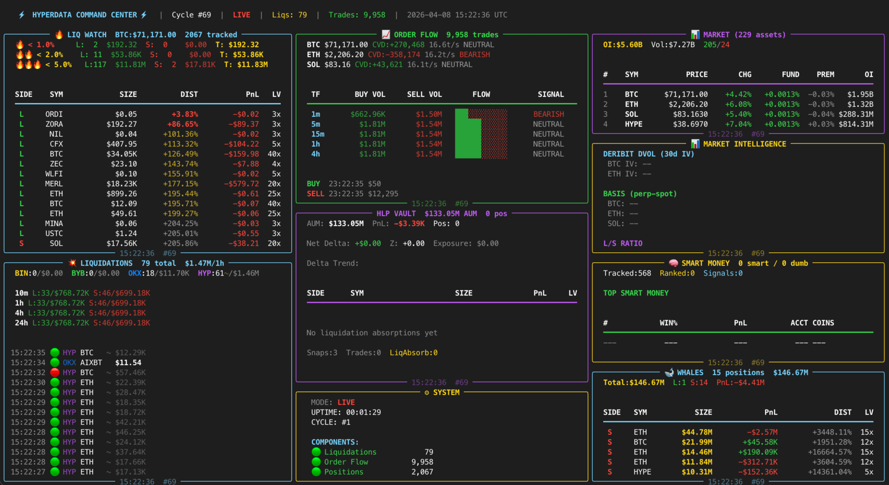

Real-time crypto market intelligence, right in your terminal.
HyperData Terminal streams live data from Hyperliquid, Binance, Bybit, OKX and Deribit. Track whale positions, monitor liquidation cascades, analyze order flow and paper-trade your own strategies, all from one command. No API keys required.
- Exchanges
- 5
- Dashboards
- 6
- Data components
- 14
- API endpoints
- 17+
- License
- Apache-2.0
- Runtime
- Python 3.12+

Six dashboards, one command.
Run hyperdata and pick a view from the menu. Every dashboard reads from the same data hub and updates in real time. Ctrl+C takes you back to the menu.
$ hyperdata
[1] Liquidation Watch Closest to liquidation
[2] Liquidation Stream Multi-exchange feed
[3] Liquidation Heatmap Risk by price level
[4] CVD Order Flow BTC volume delta
[5] Market Overview Funding, OI, prices
[6] Whale Tracker Largest positions
[0] All Dashboards Combined view
Press Ctrl+C to return to menu.
Select: 
- [1]Liquidation Watch
- BTC positions closest to liquidation on Hyperliquid. Tracks distance-to-liquidation in real time, so you can see which whales are about to get wiped.
- [2]Liquidation Stream
- Multi-exchange liquidation feed from Hyperliquid, Binance, Bybit and OKX, with size, price and exchange for every event.
- [3]Liquidation Heatmap
- Price-level view of where liquidations are concentrated. Red bars mark long-liquidation risk below price; green bars mark short-liquidation risk above it.
- [4]CVD Order Flow
- Cumulative volume delta for BTC, built from Binance WebSocket trades. See whether buyers or sellers are in control.
- [5]Market Overview
- Funding rates, open interest and prices for 50 assets across exchanges. Spot divergences and funding extremes at a glance.
- [6]Whale Tracker
- The largest open positions on Hyperliquid: size, entry price, PnL and liquidation price for the biggest players.
Five exchanges. Public feeds. No keys.
All data is fetched live from public exchange endpoints over WebSocket and REST. Nothing to sign up for, nothing to configure before the first run.
Inside, a single hub owns 14 data components and manages their async lifecycles. The dashboards, the API and the paper-trading engine all read from that one hub.
- Liquidations from 4 exchanges
- CVD order flow
- Whale positions
- Funding rates
- Open interest
- Orderbook depth
- DVOL implied volatility
- Long/short ratios
- Spot prices
- Smart-money signals
| Source | Data | Connection |
|---|---|---|
| Hyperliquid | Positions, liquidations, funding, whale tracking | WebSocket + REST |
| Binance | Trades, liquidations, orderbook | WebSocket |
| Bybit | Liquidations | WebSocket |
| OKX | Liquidations | WebSocket |
| Deribit | DVOL implied volatility | REST |
Data that checks itself.
HyperData continuously cross-checks its live feeds against Binance and Deribit and flags anything stale. The status is printed on the dashboard and exposed at /v1/health, so your own tools can read it too.
Coverage is honest, not a complete census. OKX and Bybit liquidations are real feeds (Bybit covers its top 15 symbols). Binance's stream is throttled at the source to about one liquidation per symbol per second. Hyperliquid liquidations are inferred from large trades and flagged as estimated. Details are in docs/DATA_INTEGRITY.md.
The feed agrees with the reference. Data is arriving and matches the cross-check within tolerance.
The feed has gone quiet. No fresh data has arrived recently, so what you see may be out of date.
The feed disagrees with the reference. Values have diverged from Binance or Deribit beyond the expected range.
Build on the same hub.
Everything the dashboards see is also available to your code: through a local REST API and WebSocket, or directly inside a paper-trading strategy.
REST API and WebSocket
Start the server alongside or instead of the terminal. It binds to 127.0.0.1 by default and refuses a public bind unless you set an API key or explicitly accept the risk.
$ python run_api.py --port 8420
$ curl http://localhost:8420/v1/market/BTC | python -m json.tool
$ curl http://localhost:8420/v1/orderflow/BTC
$ curl http://localhost:8420/v1/liquidations/stats
$ curl http://localhost:8420/v1/positions/danger-zoneAll 17 endpoints
| Endpoint | Returns |
|---|---|
GET /v1/live | Minimal liveness probe (always unauthenticated) |
GET /v1/health | Server status and uptime |
GET /v1/market | All assets: prices, OI, funding |
GET /v1/market/{symbol} | Single asset detail |
GET /v1/liquidations | Recent liquidation events |
GET /v1/liquidations/stats | Aggregate liquidation statistics |
GET /v1/orderflow/{symbol} | CVD snapshots for a symbol |
GET /v1/funding-rates | Funding rates across exchanges |
GET /v1/funding-rates/{symbol} | Single asset funding rate |
GET /v1/long-short-ratio | Long/short ratio |
GET /v1/basis | Basis spread |
GET /v1/deribit/iv | DVOL implied volatility |
GET /v1/orderbook/{symbol} | Orderbook snapshot |
GET /v1/whales | Top whale positions |
GET /v1/positions/danger-zone | Positions closest to liquidation |
GET /v1/public/metrics | Server metrics and component health |
WS /v1/ws | Real-time event stream: liquidations, trades, signals |
Optional LLM agent
The agent sends a market summary to any OpenAI-compatible API and asks for a trading decision. Point it at OpenAI, Ollama, LM Studio, Groq, Together or your own endpoint with three variables in .env: LLM_BASE_URL, LLM_MODEL and LLM_API_KEY. The prompt lives in src/strategies/llm_agent.py.
Paper trading, your strategy
Real market data, fake money. A strategy is one class with one method that returns a signal or nothing; the whole interface fits in about 30 lines.
from src.strategies.base import Strategy, Signal
class MyStrategy(Strategy):
name = "my_strategy"
def evaluate(self, hub) -> Signal | None:
# hub.orderflow, hub.market, hub.liquidations,
# hub.funding, hub.lsr, hub.positions,
# hub.spot, hub.deribit are all live here.
snap = hub.orderflow.get_snapshot("BTC", "5m")
if not snap:
return None
cvd = snap.buy_volume - snap.sell_volume
if cvd > 100_000:
return Signal("BTC", "BUY", size_usd=100,
confidence=0.7, reason="Strong buy pressure")
elif cvd < -100_000:
return Signal("BTC", "SELL", size_usd=100,
confidence=0.7, reason="Strong sell pressure")
return NoneIncluded example strategies
| Strategy | Reads | Logic |
|---|---|---|
| CVDMomentum | hub.orderflow | Buy when order flow is strongly positive, sell when negative |
| FundingRateArb | hub.funding | Short when funding is high, long when negative |
| LiquidationCascade | hub.liquidations | Buy the dip after large liquidation cascades |
| WhaleFollow | hub.positions | Mirror the direction of the largest whale positions |
Four commands to live data.
Clone, install, run. The first launch opens the dashboard menu with data streaming from all five exchanges.
- Requires
- Python 3.12 or newer, pip, git
- API keys
- None for the dashboards or the API. Only the optional LLM agent needs one.
- License
- Apache-2.0
$ git clone https://github.com/Co-Messi/HyperData-Terminal.git
$ cd HyperData-Terminal
$ pip install -e .
$ hyperdata